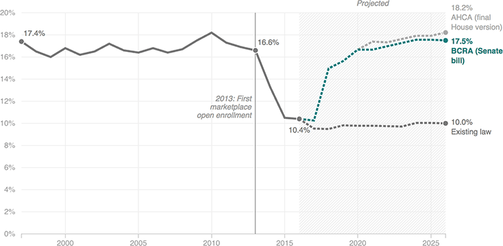

{% extends 'base_template.html' %}

{% block content %}

    {% if COPY.labels.headline %}<h1>{{ COPY.labels.headline|smarty }}</h1>{% endif %}
    {% if COPY.labels.subhed %}<h2>{{ render(COPY.labels.subhed)|smarty }}</h2>{% endif %}
    {% if COPY.labels.graphic_hed %}<h3>{{ COPY.labels.graphic_hed|smarty }}</h3>{% endif %}

    <div id="line-chart" class="graphic">
        
    </div>

    {% if COPY.labels.footnote %}
    <div class="footnotes">
        <p><strong>Notes:</strong> {{ COPY.labels.footnote|smarty }}</p>
    </div>
    {% endif %}

    <div class="footer">
        {% if COPY.labels.source %}<p>Source: {{ COPY.labels.source|smarty }}</p>{% endif %}
        {% if COPY.labels.credit %}<p>Credit: {{ COPY.labels.credit|smarty }}</p>{% endif %}
    </div>

    <script type="text/javascript">
        var DATA = {{ COPY.data.json() }};
    </script>

{% endblock content %}

{% block js %}
    {{ JS.push('js/lib/underscore.js') }}
    {{ JS.push('js/lib/d3.min.js') }}
    {{ JS.push('js/lib/textures.min.js') }}
    {{ JS.push('js/lib/modernizr.svg.min.js') }}
    {{ JS.push('js/base.js') }}
    {{ JS.push('js/graphic.js') }}
    {{ JS.render('js/graphic-footer.js') }}
{% endblock js %}
